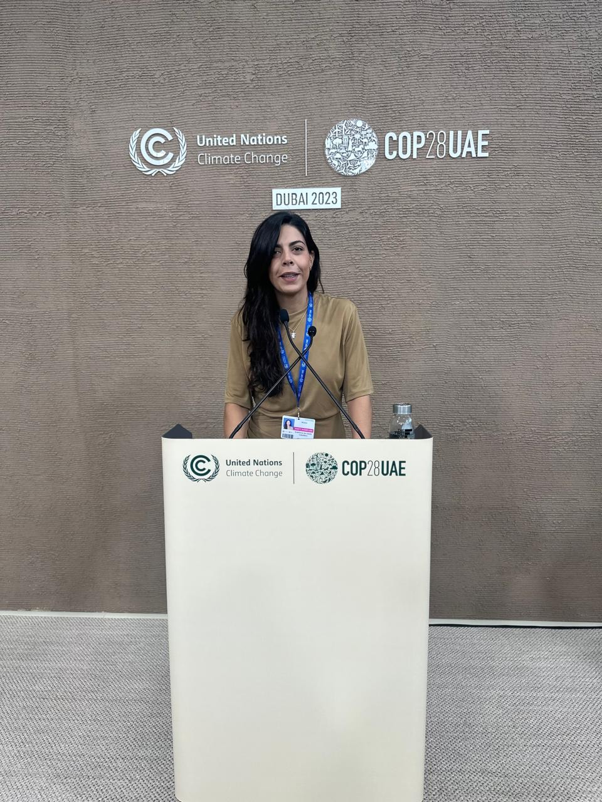

Psicóloga · Blog personal
Estefanía de Garay Caballero
Escribo sobre por qué hacemos lo que hacemos: cómo pensamos, cómo nos influye el entorno y qué nos mueve a seguir. Psicología para entenderte mejor, sin esperar a tocar fondo.


Sobre mí
Hola, soy Estefanía.
Soy psicóloga y me apasiona observar a las personas: lo que dicen, lo que callan y lo que repiten sin darse cuenta.
Creo que la salud mental merece la misma prevención que la salud física. Por eso, en mi práctica y en este blog, hablo de lo que solemos normalizar: el cansancio que no se va, la voz que nos dice que no somos suficientes, las relaciones que nos desgastan y la motivación que aparece y desaparece.
Me interesa tanto lo individual como lo colectivo. Analizo cómo nuestro entorno —las redes, el trabajo, la cultura del “siempre productivo”— moldea lo que sentimos. He tenido la oportunidad de compartir mi voz en espacios internacionales como la COP28 en Dubái, y sigo convencida de que el bienestar también es una conversación social.
Aquí vas a encontrar análisis, reflexiones y herramientas prácticas. Nada de frases vacías: ideas que puedas aplicar hoy.
El blog
Lo último que he escrito
Análisis y reflexiones de Estefanía de Garay Caballero sobre la mente, la sociedad y lo que nos impulsa.
No tienes que tocar fondo para ir a terapia: 5 señales que solemos normalizar
Esperamos a la crisis para pedir ayuda, como si el malestar tuviera que ganarse un lugar. Estas son las señales que veo una y otra vez antes de que llegue el quiebre.
Leer artículo7 hacks de motivación que sí funcionan (según la psicología)
La motivación no se espera, se diseña. Siete estrategias pequeñas para empezar cuando no tienes ganas.
Leer artículoSíndrome del impostor: por qué dudas de tu propio éxito
Si sientes que tus logros son pura suerte, no es humildad: es una distorsión. Así se desarma.
Leer artículoComparación social: por qué las redes te hacen sentir que vas tarde
Comparamos nuestro detrás de cámaras con el resumen editado de los demás. Un análisis de lo que eso le hace a la mente.
Leer artículoCómo leer a las personas (sin caer en mitos de lenguaje corporal)
Entender a alguien no es adivinar. Es observar patrones, contexto y coherencia. Te cuento cómo lo hago.
Leer artículoHacks de motivación
Para cuando no tienes ganas
Pequeñas palancas psicológicas que uso y recomiendo. Ninguna requiere fuerza de voluntad heroica.
La regla de los 2 minutos
Reduce la tarea a algo que tome dos minutos. Empezar es la parte difícil; continuar suele venir solo.
“Si pasa X, hago Y”
Decide de antemano cuándo y dónde actuarás. Las intenciones concretas se cumplen mucho más que las vagas.
Hazlo visible
Marca tu avance en algo que veas a diario. El cerebro se motiva con progreso, no con metas lejanas.
Quita fricción
Prepara el terreno la noche anterior. Lo que es fácil de empezar, se hace más.
“No necesitas estar roto para merecer cuidado. Necesitas estar vivo.”— Estefanía de Garay Caballero
Sígueme
La conversación sigue en mis redes.
Comparto reflexiones diarias, análisis rápidos de lo que pasa en la sociedad y hacks de motivación que caben en un minuto. Sígueme y seguimos platicando.